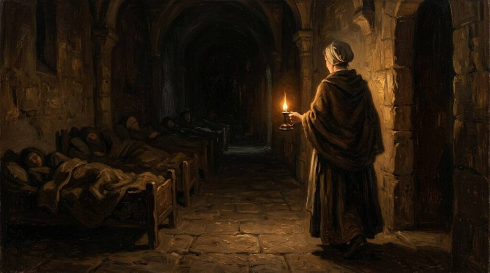
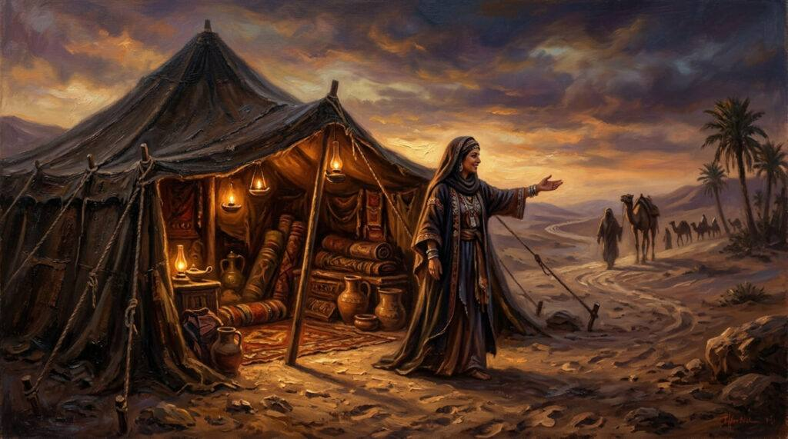
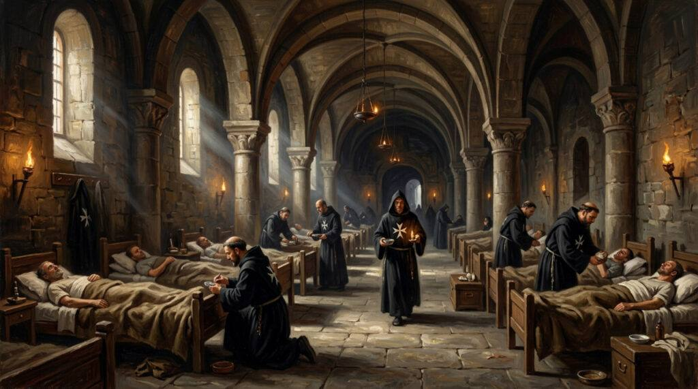
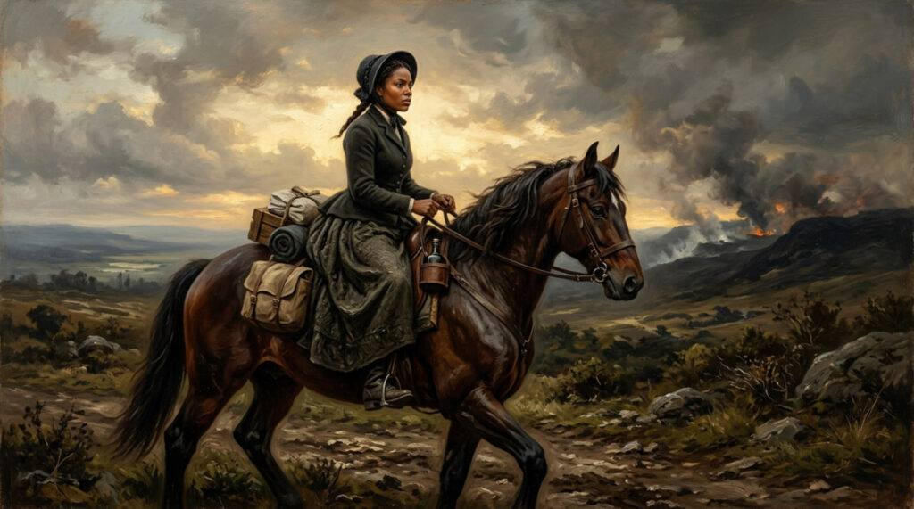
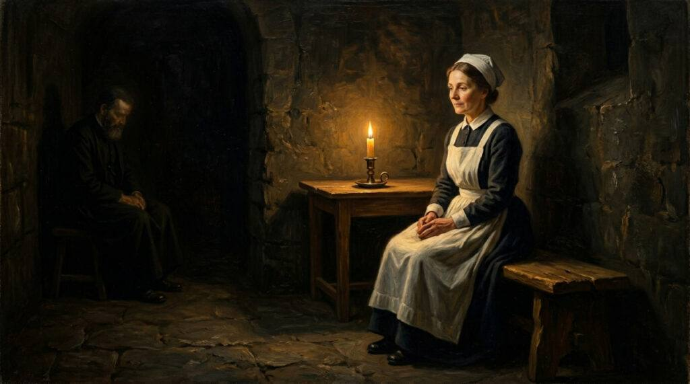
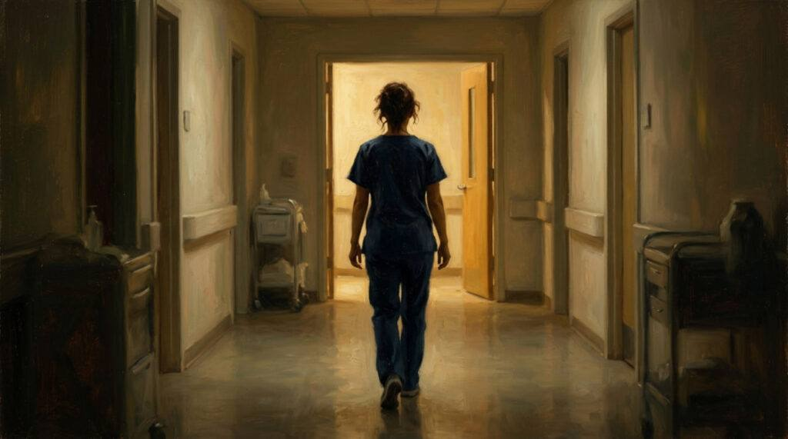
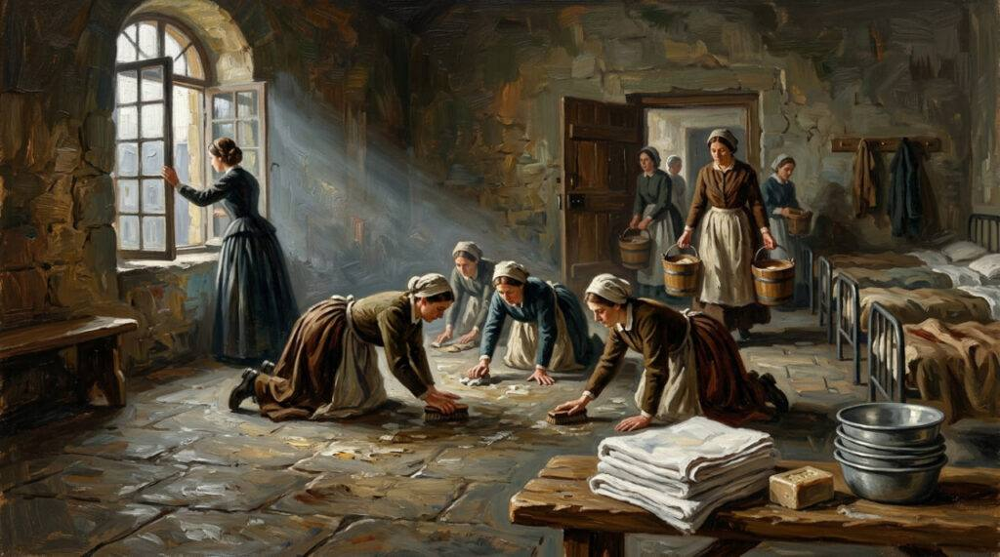

From a desert tent in 620 AD to hospital corridors lit by phone screens — the world’s most trusted profession was built by people who refused to leave.

Every few years, a major survey asks people in different countries which profession they trust most. Nurses finish first almost every time. Not doctors. Not judges. Not scientists.
Nurses.
But here is the thing that surprises most people: the word “nurse” is barely two thousand years old. And for most of those two thousand years, it did not describe a person who cares for the sick at all.
It came from the Latin nutrire — to nourish, to feed. A nurse was a woman who breast-fed an infant. That was the whole job description.
So how did we get from that single word, in a Roman house, to a global profession of nearly 30 million people — the largest healthcare workforce on Earth?
That journey is stranger, darker, and more remarkable than most history books admit. It involves a woman riding a camel across a desert battlefield. A small lamp in a freezing corridor. A nurse executed at dawn by a firing squad. And a question that no healthcare system has solved yet.
Whose hands actually do the work?
Nursing Through Time
Eight moments, one lamp — the long story of the people who stay.

The First Name We Remember
In Medina, Rufaida treats the wounded in a tent beside the Prophet's Mosque.

Soldiers Who Nursed
The Knights Hospitaller are formally recognized — warrior-monks who run hospitals and tend the sick.
The Dark Centuries
For three hundred years, nursing falls into a professional void — untrained, unpaid, unrespected.
The Lady with the Lamp
Florence Nightingale reaches Scutari. Her lamp is famous; her statistics change medicine.

The Woman They Refused
Refused by officials, Mary Seacole pays her own way to Crimea and builds the British Hotel.
The First Registered Nurse
New Zealand registers nurses first. Ellen Dougherty becomes the world's first registered nurse.

'No Hatred or Bitterness'
Edith Cavell is executed for helping soldiers escape. Her last words travel the world.

Thirty Million Nurses
Nursing is the backbone of world health — and faces an equity crisis still waiting to be fixed.
The First Name We Remember: Rufaida and the Tent That Changed Everything
The year is approximately 620 AD. The city is Medina, in what is now Saudi Arabia. And a young woman named Rufaida bint Sa’ad Al-Aslamiyya has just done something no one had done before.
She has set up a clinic.
Not inside a palace, not attached to a mosque. A tent, pitched in the open air, where she treats the sick, the poor, and the orphaned — the people no family will touch and no physician will bother with.
Rufaida, born in 620 CE in Medina, was the daughter of a physician named Saad Al-Aslami. She trained under her father and embraced Islam early, becoming one of the first people in Medina to do so. She was, by most accounts, quiet and precise — and a remarkable organizer.
She is recognized as the first female Muslim nurse, among the first people in Medina to accept Islam, and gained fame for helping to welcome the Prophet Muhammad upon his arrival in the city.
When war came, Rufaida didn’t wait for permission to help. She requested it directly. Rufaida and a group of volunteer nurses went to the Prophet and asked to accompany the army to treat the injured and help in any way they could. He gave them permission. After the conflict at Khaibar, the Prophet assigned Rufaida the same share of the war spoils as the soldiers who had fought — a formal recognition of her medical and nursing work.
She participated in the battles of Khandaq, Khaibar, and others, leading groups of volunteer nurses who went to the battlefield and treated casualties. She set up what historians now call the first mobile field hospitals in recorded history.
What’s striking here is the gap between what Rufaida actually did and how little of the world knows about it. About 1,200 years before Florence Nightingale, considered the founder of modern nursing, Rufaidah bint Sa’ad introduced the nursing profession to the Muslim world — training women as nurses, establishing the first code of nursing rules and ethics, and creating the first known healthcare clinic in Islam.
Today, a nursing college at Aga Khan University in Pakistan bears her name. The University of Bahrain honours exceptional nurses annually with the prestigious Rufaida Al-Aslamiyah Prize. Both institutions are flourishing. The name is still almost unknown in the Western world.
When Soldiers Were Also Nurses: The Strange Brotherhood of the Knights Hospitaller
In 1099, the First Crusade ended with the capture of Jerusalem. Christian armies had fought for four years across the deserts and mountains of the Middle East. They arrived in a city broken by siege, with tens of thousands of starving pilgrims pouring in behind them.
Somebody had to care for these people.
Into that chaos stepped a remarkable institution. The origin of the Hospitallers was an 11th-century hospital founded in Jerusalem by Italian merchants from Amalfi to care for sick and poor pilgrims. The order was formally named and recognized on February 15, 1113, in a papal bull issued by Pope Paschal II.
The man who built it into something extraordinary was Blessed Gerard, its first master — a monk who believed that caring for the sick was a sacred duty indistinguishable from prayer.
The Jerusalem hospital was large enough for 2,000 patients. Its wards — usually 11 — were each staffed by a brother-in-charge and twelve assistants. There were separate wards for women. There were four physicians and four surgeons. Wards were kept clean and well ventilated. Food was described as lavish, based on the early recognition of the connection between recovery and proper nutrition. Many patients would have found themselves sleeping in separate beds for the first time in their lives.
The sick were admitted regardless of gender, creed, or nationality, with evidence that the dietary rules of non-Christian guests were honored. There is a quiet irony in the fact that an order born from the Crusades — one of the most violent religious conflicts in history — ran what may have been the most inclusive hospital in the medieval world.
The rule of the order was simple. Nursing the sick was understood as an act of Christian love: every poor man and woman was Christ; they should not just have good treatment, but the best.
For three centuries before this, nursing in Europe had lived inside monasteries and convents. Monks and nuns sat with the dying, built hospices for lepers, and cared for the poor — not as a profession, not as a trade, but as a vow. Their knowledge was real. Their commitment was total. But it was fragile.
In 1536, that fragility became catastrophe. King Henry VIII of England closed every monastery in the country. The land was seized, the hospitals emptied, the religious communities dissolved. And almost overnight, the people who had been caring for the sick were gone.
The Dark Centuries: Three Hundred Years Without a Nurse
What followed was one of the stranger episodes in this story. For roughly three hundred years — from the mid-16th century to the mid-19th — nursing in much of Europe existed in a kind of professional void.
If you were wealthy, you stayed home. A doctor came to you. Your servants nursed you. If you were poor, you had one option: a woman in the neighborhood who would sit with you for a few coins a day.
These women had no training, no license, no school, no professional standards of any kind. Some were kind. Some were desperate. Many drank heavily to get through the night shifts.
In 1843, Charles Dickens captured this entire world in a single fictional character. Her name was Sairey Gamp, a nurse in his novel Martin Chuzzlewit — almost always drunk, tending the sick by day and laying out the dead by night, both jobs paying equally well.
Florence Nightingale herself would later describe nursing in those years as something left to those “too old, too weak, too drunken, too dirty, too stupid, or too bad to do anything else.”
The evidence is thin on whether most nurses were quite that bad, but the reputation was real, and it stuck. In early Victorian England, nursing was considered deeply disreputable work.
That was the world that Florence Nightingale was born into — and spent a decade trying to leave.
The Lady with the Lamp and the Statistics That Changed Medicine
Florence Nightingale was born in 1820, in the Italian city she was named after, to a wealthy English family that gave her everything except the one thing she wanted: permission to do something useful with her life.
She rejected marriage. She read every hospital report she could find. She begged her parents to let her study nursing. For ten years, they refused. At Scutari, where she arrived in October 1854 with 38 female nurses under her supervision, the conditions were worse than any newspaper had prepared her for. Originally a gargantuan stone barracks for the Turkish army, Scutari housed thousands of wounded English and Irish soldiers with few provisions, little medicine, overcrowded wards full of rats, lice and raw sewage. More soldiers were dying of cholera and other infectious diseases than of battle wounds.
Nightingale implemented significant reforms focused on sanitation, nutrition, and organization, including establishing proper kitchen facilities and washing protocols. These changes reduced the mortality rate from 42% to 22%. Other estimates, including from published medical sources, suggest the rate eventually fell even lower — to around 2% by the end of the intervention. The exact figures depend on which hospital, which period, and which historian is counting.
But the scale of the transformation is not in dispute. What Florence did was simple, and that is what makes it so astonishing.
She bought soap. She opened windows. She wrote letters home for men who could not hold a pen.

Nightingale used statistical data to create her famous “rose chart” — one of the first pie charts ever made — showing that the vast majority of deaths among British soldiers during the Crimean War were from preventable diseases, not battle wounds. In 1858, in recognition of this statistical work, she was inducted into the Royal Statistical Society as the organization’s first female fellow.
The Nightingale Fund raised £45,000 — a substantial fortune in 1860 — to open the Nightingale School of Nursing at St. Thomas’ Hospital in London. It was the first secular nursing school in the world. Students lived together, studied together, worked in the wards. They were educated. They were respectable. And they were paid.
For the first time in modern history, a woman could become a nurse not as a vow, not as charity, not as a last resort — but as a career.
The Woman They Refused: Mary Seacole and the Debt That Stayed Unpaid
Here is the part of the Crimean War story that most school textbooks leave out.
At the same time Florence Nightingale was sailing to Turkey, another woman was trying to get to the front — and being turned away at every door.
Mary Seacole was born Mary Jane Grant in Kingston, Jamaica, in 1805. Her mother was a free black Jamaican woman, a “doctress” skilled in traditional medicine who provided care for invalids at her boardinghouse. Her father was a Scottish soldier. Mary grew up watching her mother work. She learned herbal remedies, cholera treatment, yellow fever care. By the time she was fifty, she was one of the most experienced healers in the Caribbean.
Seacole was in London in 1854 when reports of the lack of necessities and breakdown of nursing care for soldiers in the Crimean War began to be made public. Despite her experience, her offers to serve as an army nurse were refused, and she attributed her rejection to racial prejudice.
She was refused again. And again. And again.
Mary Seacole wrote later, in her own words, that she could not help wondering whether the ladies who turned her away were shrinking from her aid because her blood flowed beneath a darker skin.
She did not stop. In 1855, with the help of a relative of her husband, she went to Crimea as a sutler, setting up the British Hotel to sell food, supplies, and medicines to the troops. She assisted the wounded at the military hospitals and was a familiar figure at the transfer points for casualties from the front.
Mary went a step further than most nurses, doing something incredibly brave — she rode on horseback into the battlefields, even when under fire, to nurse wounded men from both sides of the war. The soldiers called her “Mother Seacole.”
When the war ended, she returned to England destitute and was declared bankrupt. The men she had cared for raised money for her through newspaper campaigns. Eighty thousand people attended a charity gala in her honor.
And then she was forgotten for more than a hundred years.
Seacole’s contributions to the Crimean War were largely forgotten over the century after her death. Her life story regained public interest in the late twentieth century, with Jamaican nurses comparing her actions to those of Florence Nightingale. A painting of Seacole was hung in London’s National Portrait Gallery in 2003. In 2016, a statue of Seacole was erected outside of St. Thomas’ Hospital in London.
The same hospital where Florence Nightingale opened her nursing school. The two women stand near each other now, in stone. Perhaps as they should have, long before.
The Nurse Who Chose No Side: Edith Cavell’s Last Night
The First World War produced many nurses whose stories deserve more space than history gave them. One stands above the rest — not for what she did in the wards, but for what she said the night before she was shot.
Edith Louisa Cavell (4 December 1865 – 12 October 1915) was a British nurse, celebrated for treating wounded soldiers from both sides without discrimination during the First World War and for helping some 200 Allied soldiers escape from German-occupied Belgium.
Before the war, she had been matron of a nursing school in Brussels — effectively the founder of modern nursing education in Belgium. There was no established nursing profession in Belgium at the time of Edith’s appointment, and her pioneering work led her to be considered the founder of modern nursing education in that country.
When German troops occupied Brussels in 1914, Cavell stayed at her post. She treated German wounded alongside Allied soldiers. Then, working through the Belgian underground, she began helping British and French prisoners of war escape across the border into neutral Holland.
She was arrested, court-martialled under German military law, and sentenced to death by firing squad. Despite international pressure for mercy, the German government refused to commute her sentence.
The night before her execution, she met with a chaplain in her cell. She told him: “I realize that patriotism is not enough. I must have no hatred or bitterness towards anyone.”
She was 49 years old.
Her execution received worldwide condemnation and extensive press coverage. These words were inscribed on the Edith Cavell Memorial opposite the entrance to the National Portrait Gallery near Trafalgar Square.
There is something almost unbearably clear about those last words. A woman facing a firing squad — and the thing she is most concerned about is bitterness. Not her own death. Not the injustice of the sentence. Bitterness.
It is hard not to admire the scale of that. And to notice that it sounds less like heroism than like the daily discipline of every nurse who has ever cared for a patient they had reason to resent.
78% of Nurses, Half the World: The Equity Crisis No One Is Fixing
The WHO’s State of the World’s Nursing 2025 report, released on International Nurses Day — May 12, 2025, Florence Nightingale’s birthday — presents a picture that is both hopeful and quietly alarming.
The global nursing workforce has grown from 27.9 million in 2018 to 29.8 million in 2023. Global progress is reducing the nursing workforce shortage from 6.2 million in 2020 to 5.8 million in 2023, with a projection to decline to 4.1 million by 2030.
Progress, in other words. But here is the detail that changes the picture entirely.
Approximately 78% of nurses are concentrated in countries comprising only half of the world’s population. The other half of the world — mostly in Africa, South Asia, and parts of Latin America — shares the remaining 22%.
The detail most analysts overlook is that this is not a new crisis. It is the oldest pattern in this story, repeating itself with different numbers. The places with the fewest nurses have always been the places whose patients most need them. Rufaida rode camels to reach them. The Knights built hospitals to house them. Nightingale bought soap to keep them alive.
The WHO 2025 report projects a worsening regional disparity: nearly 70% of the global nursing deficit is expected to be concentrated in Africa and the Eastern Mediterranean by 2030. Africa is projected to see only a 7% increase in its nursing workforce between 2023 and 2030.
In the U.S., the post-pandemic nursing workforce has largely stabilized, with the focus shifting from shortages and recruitment to retention and long-term pipeline development. In other words, the wealthy half of the world is rebuilding its supply. The other half is still waiting.
New Zealand, interestingly, led the world on this front more than a century ago. On September 12, 1901, it became the first country in the world to regulate nursing nationally, with its Nurses Registration Act — and a woman named Ellen Dougherty became the world’s first officially registered nurse.
The standard was set early. Catching up, for much of the world, is still the work in progress.
What Historians Still Cannot Agree On: Four Open Questions in Nursing History
History rarely lets a story end cleanly, and the history of nursing is no exception. Several things we thought we knew are more complicated than they look.
Was Nightingale really responsible for the improvement at Scutari?
Modern historians, including Professor Lynn McDonald who has produced the most comprehensive academic study of Nightingale’s statistical work, note that the death rate figures cited in popular accounts don’t always agree. Different hospitals, different periods, and different counting methods produce different numbers. What is not disputed: Nightingale’s advocacy for sanitation reform, her statistical innovations, and her political influence on hospital design changed British medicine permanently. Whether her personal interventions at Scutari account for the full drop in mortality — or whether a government-appointed Sanitary Commission that arrived in 1855 deserves more credit — is a genuine scholarly debate.
Was Mary Seacole rejected purely because of race?
The evidence is strong but not absolute. Some historians note that nursing positions at the time were already filled and that administrative chaos also played a role. Seacole herself attributed her rejections to racial prejudice, and the pattern of refusals — four separate attempts — makes her interpretation hard to dismiss. The honest answer is: probably yes, but the institutional record is incomplete.
What does Rufaida’s “code of nursing ethics” actually say?
Scholars cite her as the author of the first nursing ethics code, but the original document — if it was a document — has not survived in any form that modern historians can access and verify. What we have are references in medieval Islamic biographical texts, including Ibn Sa’d’s Al-Tabaqat and Ibn Hajar’s Al-Isabah, confirming her existence and her work. The ethics themselves are reconstructed from those secondary descriptions. The evidence is thin for the precise wording; it is solid for the person and the practice.
When did nursing actually become a “profession”?
Historical documents point to references of professional nursing around 300 AD in the Roman Empire. New Zealand regulated nursing nationally in 1901. The U.S. required licensing by state — the first state being North Carolina in 1903. There is no single moment. The profession materialized, over centuries, from vow to charity to disrepute to respectability to global workforce. It is still materializing in parts of the world today.
What the Lamp Teaches Us
Five quiet lessons from the people who stay through the night.
- Staying is a skill. The nurse's oldest power is presence — being there through the night when everyone else has gone.
- Data can be compassion. Nightingale's statistics saved more lives than her lamp. Numbers, used with love, are a form of care.
- Refused people can still serve. Mary Seacole was turned away — so she paid her own way to the war and built her own hospital-hotel.
- Courage can be quiet. 'I must have no hatred or bitterness toward anyone.' Edith Cavell's last words were a kind of nursing, too.
- Care deserves equal honor. Nurses are 78% women and half of health care's story. Respect must catch up with reality.
Frequently Asked Questions About the History of Nursing
Who is considered the founder of modern nursing?
Florence Nightingale (1820–1910) is most widely credited as the founder of modern professional nursing in the Western tradition. She established the first secular nursing school at St. Thomas’ Hospital in London in 1860, developed the use of statistics in healthcare reform, and redefined nursing as an educated, respectable profession. However, scholars in Islamic history cite Rufaida Al-Aslamiyya (c. 620 AD) as the first formally documented nurse — roughly 1,200 years before Nightingale — who trained nurses, set ethical codes, and created the first mobile field hospitals.
When did nursing become a paid profession?
Nursing as a paid, trained, and respectable profession in the modern sense is generally dated to 1860, when Florence Nightingale opened the Nightingale Training School at St. Thomas’ Hospital in London. Before this, most nursing was done by family members, religious orders, or untrained women hired informally. New Zealand became the first country to legally regulate and license nursing as a national profession in 1901.
Why is Florence Nightingale called the Lady with the Lamp?
British soldiers in the Crimean War gave Nightingale this nickname because she made nightly rounds of the hospital wards at Scutari, walking miles of corridors with a small Turkish lamp to check on patients after the doctors had gone to sleep. The image was widely reproduced in the press back home and became one of the most powerful symbols of nursing in history. The nickname stuck.
Who was Mary Seacole and why was she forgotten?
Mary Seacole (1805–1881) was a Jamaican nurse and businesswoman who traveled to the Crimean War at her own expense after British authorities repeatedly refused to hire her — almost certainly due to racial prejudice. She set up the British Hotel near the front lines, nursed wounded soldiers from both sides, and became beloved by troops as “Mother Seacole.” After the war she was declared bankrupt, received little official recognition, and was largely absent from nursing histories for over a century. A statue was finally erected outside St. Thomas’ Hospital in London in 2016.
How many nurses are there in the world today?
According to the WHO’s State of the World’s Nursing 2025 report, there are approximately 29.8 million nurses worldwide as of 2023. This represents significant growth from 27.9 million in 2018, but a shortage of 5.8 million nurses remains globally. The distribution is deeply unequal: 78% of the world’s nurses are concentrated in countries representing only half the global population.
Was Edith Cavell a spy?
No. Edith Cavell was executed by German authorities in 1915 not for espionage but for violating German military law by helping Allied soldiers escape from occupied Belgium. She openly admitted to helping approximately 200 British, French, and Belgian soldiers cross the border into neutral Holland. She offered no defense at her court-martial and was sentenced to death by firing squad. Her execution caused international outrage and is still considered one of the defining moral moments of World War I.
The lamp is small. The work is long. And somewhere, someone is awake.
What the Lamp Illuminates
The story of nursing is really the story of a single recurring question: when someone is sick and has no one, who stays?
The answers have changed with every century. A mother grinding herbs. A monk under monastic vow. A woman on a camel, organizing tents at the edge of a battlefield. A quiet English woman walking four miles of corridors with a lamp, stopping at every man. A Jamaican woman who was turned away from every official door and went anyway.
None of them set out to build a profession. They set out to answer a question that had no other answer.
What separates the history of nursing from the history of most other professions is this: nursing has always been done by the people society was most willing to ignore. Women, when women were not considered capable of serious work. Religious orders, when secular medicine had no room for the poor. Colonized people, when colonial systems had no place for them in respectable roles.
And yet, somehow, they kept showing up. At the hospital. At the battlefield. At the door no one opened for them.
The WHO now estimates that by 2030, the world will still be short 4.1 million nurses — the bulk of that shortage in Africa and the Eastern Mediterranean. The name Rufaida comes from a region that will bear 70% of that gap.
Four thousand years of learning how to care for a stranger. And the lesson is still not finished.
The lamp is small. The work is long. And somewhere, someone is awake.
Words to Take With You
lamp
nounA small light carried in the hand.
Nightingale's lamp became a symbol of care that stays through the night.
tent
nounA shelter made of cloth, easy to move.
Rufaida treated the wounded in a tent beside the mosque in Medina.
wound
nounDamage to the body, such as a cut.
The first nurses cleaned wounds on battlefields.
battlefield
nounThe place where a battle is fought.
Seacole rode toward the battlefield smoke with her supplies.
statistics
nounNumbers collected and studied to understand something.
Nightingale used statistics to prove why soldiers were dying.
refuse
verbTo say no to something; to not accept or allow.
Officials refused Seacole — so she went to Crimea anyway.
register
verbTo officially record a name on a list.
New Zealand was the first country to register nurses, in 1901.
crisis
nounA dangerous or difficult time that demands action.
Today nursing faces an equity crisis no one is fixing.
Summary
- The word “nurse” comes from the Latin nutrire — “to nourish” — and originally described only a wet-nurse feeding an infant, not a caregiver
- Rufaida Al-Aslamiyya (born c. 620 AD) created the world’s first documented mobile field hospitals and trained the first known group of nurses — roughly 1,200 years before Florence Nightingale
- The Knights Hospitaller’s Jerusalem hospital held 2,000 patients in 11 wards, admitted anyone regardless of faith, and operated with 4 doctors and 4 surgeons — medieval medicine at its most advanced
- Florence Nightingale reduced mortality at Scutari from 42% to around 2% — primarily through cleaning, ventilation, and proper food, not surgery
- Mary Seacole, turned down by every official British authority because of her race, paid her own way to the Crimea and nursed soldiers from both sides of the war — then was forgotten for over a century
- Edith Cavell (1865–1915), executed by a German firing squad at 49, helped approximately 200 Allied soldiers escape occupied Belgium
- The WHO’s 2025 State of the World’s Nursing report found 29.8 million nurses globally — yet a deficit of 5.8 million remains, with 78% of nurses concentrated in countries representing only half the world’s population
Sources and Further Reading
We told this story using the sources below. If you would like to read more, these are good places to begin.
- World Health Organization — State of the World's Nursing 2025, the official report
- EveryMuslim — Kasule (2003): the founder of the nursing profession in Islam (full text)
- Open Library — Women in Nursing in Islamic Societies (Bryant ed., Oxford University Press, 2003)
- World History Encyclopedia — the Knights Hospitaller
- New World Encyclopedia — the Knights Hospitaller
- Encyclopaedia Britannica — Mary Seacole, biography
- Imperial War Museums — who was Edith Cavell?
- Gresham College — Lynn McDonald: Florence Nightingale and her Crimean War statistics
- American Nurse Journal — how Nightingale overcame the limits set on Victorian women
- SAGE Open Nursing (PMC) — global nursing shortages: a call for policy over promise (2025)
A Note from HitoCast
This article was researched and written by the HitoCast editorial team. We cross-checked facts across 10+ sources, including WHO reports and academic histories of Islamic medicine, medieval military orders, and Crimean War nursing. If you spot an error or have a source to recommend, please email us — we update articles regularly.